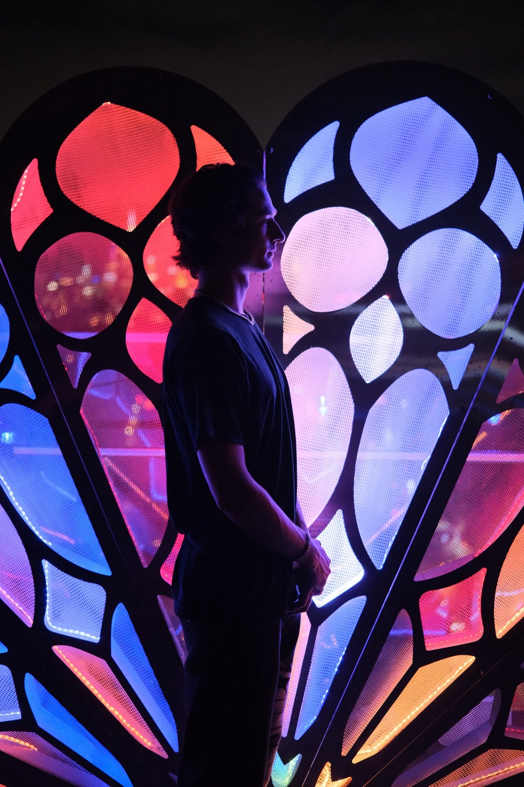

Hunter Keene is a New York based designer working between architecture, fabrication and the stage. He earned his Bachelor of Architecture from Penn State University, with a minor in architectural history, and spent his final semester studying in Rome at the Pantheon Institute.
Alongside his design work, Hunter is a Broadway stagehand specializing in theatrical rigging and carpentry, and drafts for a local design firm and freelance clients. Moving between the drawing board and backstage led him to immersive architectural sculpture, including The Gothic Folly, which debuted at Burning Man in 2026.
He enters international design competitions and keeps returning to fabrication, digital-to-physical feedback loops, fashion, architectural research and scenic installation.
- inquiries.hunter@gmail.com
- @tears_of_hunter
- Hunter Keene